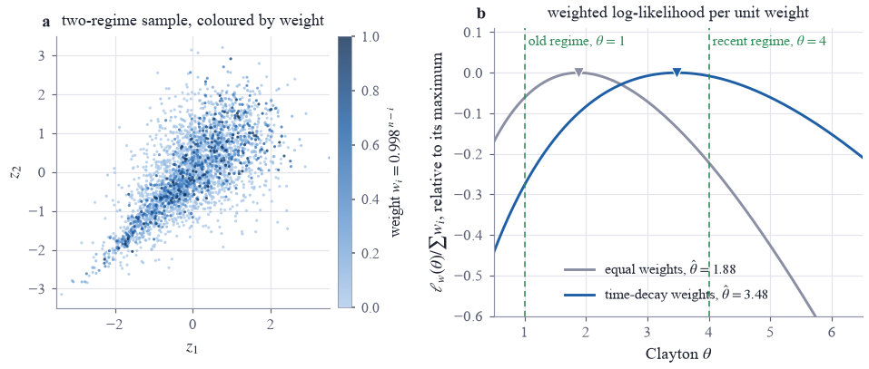
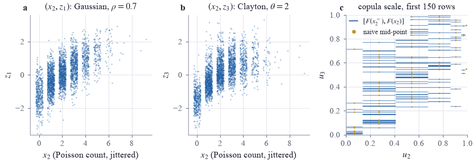
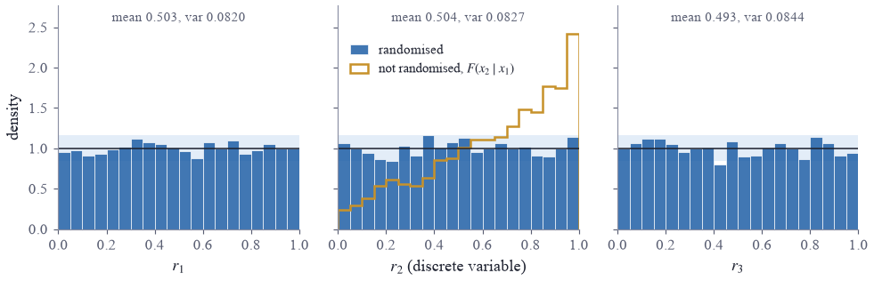

Weighted and discrete data¶
Program: example/ex05_weights_discrete.f90 · Topics: the weights=
argument of fit/select, the discrete= and u_minus= arguments of
fv_vinecop%select, pdf, loglik and rosenblatt, randomised Rosenblatt residuals.
Two features that real data often need:
- Observation weights. Every fitting and selection routine accepts
weights(n). The weighted log-likelihood \(\sum_i w_i \log c(u_i; \theta)\) is maximised, and weighted Kendall taus drive the vine structure. - Discrete variables. Counts, classes and other discrete margins are supported inside a vine following the convention of vinecopulib: each discrete variable is passed as \(u = F(x)\) together with \(u^- = F(x^-)\), the margin's distribution function just below the observed value.
Code¶
! ex05_weights_discrete -- (1) observation weights: a time-decay weighted fit that follows a
! change in dependence, and integer weights = duplicated rows; (2) a vine with a discrete
! (Poisson count) variable, passed as u = F(x) and u_minus = F(x-) with discrete = .true.
program ex05_weights_discrete
use fortvine_api
implicit none
integer, parameter :: dp = kind(1.0d0), n = 3000, d = 3
real(dp), parameter :: LAM = 2.0_dp ! Poisson mean of the count variable
type(fv_bicop) :: cop, fit
type(fv_vinecop) :: truth, vd, vn
real(dp), allocatable :: u1(:), u2(:), w(:), wt(:), x1(:), x2(:)
real(dp), allocatable :: z(:, :), u(:, :), um(:, :), umid(:, :), r(:, :), dens(:)
integer :: i, k, cnt
! ---------------------------------------------------------------- (1) weights
allocate(u1(n), u2(n), w(n), wt(n), x1(2 * n), x2(2 * n))
call seed_rng(11)
call random_number(u1); call random_number(w)
cop%family = FV_CLAYTON
cop%par(1) = 1.0_dp; call cop%hinv1(u1(1:n/2), w(1:n/2), u2(1:n/2)) ! old regime: tau 1/3
cop%par(1) = 4.0_dp; call cop%hinv1(u1(n/2+1:), w(n/2+1:), u2(n/2+1:)) ! recent regime: tau 2/3
fit%family = FV_CLAYTON
call fit%fit(u1, u2)
print '(a,f7.3)', 'Clayton fit, equal weights: theta =', fit%par(1)
wt = [(0.998_dp**(n - i), i = 1, n)] ! exponential time decay, half-life ~350 rows
call fit%fit(u1, u2, weights=wt)
print '(a,f7.3,a,f7.1,a)', 'Clayton fit, time-decay weights: theta =', fit%par(1), &
' (effective n =', sum(wt)**2 / sum(wt**2), ')'
! integer weights are the same as repeating rows
call random_number(wt)
wt = merge(2.0_dp, 1.0_dp, wt > 0.5_dp)
k = 0
do i = 1, n
do cnt = 1, nint(wt(i))
k = k + 1; x1(k) = u1(i); x2(k) = u2(i)
end do
end do
call fit%fit(u1, u2, weights=wt)
print '(a,f12.8,a,f12.4)', 'weights 1/2: theta =', fit%par(1), ' loglik =', fit%loglik
call fit%fit(x1(1:k), x2(1:k))
print '(a,f12.8,a,f12.4)', 'duplicated rows: theta =', fit%par(1), ' loglik =', fit%loglik
! ---------------------------------------------------------------- (2) a discrete variable
! D-vine 1-2-3: gaussian(0.7) and clayton(2) in tree 1, frank(2) in tree 2
allocate(z(n, d), u(n, d), um(n, d), umid(n, d), r(n, d), dens(n))
call truth%set_dvine([1, 2, 3])
truth%fam(1:2, 1) = [FV_GAUSSIAN, FV_CLAYTON]
truth%par(1, 1, 1) = 0.7_dp; truth%par(1, 2, 1) = 2.0_dp
truth%fam(1, 2) = FV_FRANK; truth%par(1, 1, 2) = 2.0_dp
call truth%simulate(n, z, seed=5)
! variable 2 becomes a Poisson(2) count x = F^-1(z); the copula data are F(x) and F(x-)
u = z; um = z ! continuous columns: u_minus is not used
do i = 1, n
k = qpois(z(i, 2))
u(i, 2) = ppois(k); um(i, 2) = ppois(k - 1)
end do
print '(/,a,i0,a,i0,a,f6.3)', 'count variable: ', count(um(:, 2) == 0.0_dp), ' zeros, maximum ', &
maxval([(qpois(z(i, 2)), i = 1, n)]), ', mean ', sum([(qpois(z(i, 2)), i = 1, n)]) / real(n, dp)
! (a) the discrete-aware fit on the fixed D-vine structure
call vd%set_dvine([1, 2, 3])
call vd%select(u, discrete=[.false., .true., .false.], u_minus=um)
! (b) a naive fit that treats the count as continuous (mid-point of its CDF jump)
umid = u; umid(:, 2) = 0.5_dp * (u(:, 2) + um(:, 2))
call vn%set_dvine([1, 2, 3])
call vn%select(umid)
! select may store the same D-vine in the reverse order, so edges are found by their pair
print '(a)', 'tree-1 pair truth discrete-aware naive'
do k = 1, 2
print '(a,i0,a,i0,a,3(a10,f7.3,1x))', ' (', k, ',', k + 1, ') ', &
fv_fam_name(truth%fam(edge(truth, k, k + 1), 1)), truth%par(1, edge(truth, k, k + 1), 1), &
fv_fam_name(vd%fam(edge(vd, k, k + 1), 1)), vd%par(1, edge(vd, k, k + 1), 1), &
fv_fam_name(vn%fam(edge(vn, k, k + 1), 1)), vn%par(1, edge(vn, k, k + 1), 1)
end do
! log-likelihood of the mixed data (density in x1, x3 times probability mass in x2)
truth%disc = [.false., .true., .false.]
print '(a,f10.2,a,f10.2)', 'loglik of the mixed data: truth', truth%loglik(u, um), &
' discrete-aware fit', vd%loglik(u, um)
call vd%pdf(u(1:3, :), dens(1:3), u_minus=um(1:3, :))
print '(a,3es11.3)', 'first three mixed densities:', dens(1:3)
! randomised Rosenblatt transform (Brockwell 2007): iid uniform when the model is right
call vd%rosenblatt(u, r, u_minus=um, seed=1)
print '(a,3f8.4)', 'Rosenblatt column means (1/2): ', sum(r, 1) / n
print '(a,3f8.4)', 'Rosenblatt column variances (1/12): ', &
[(sum((r(:, k) - sum(r(:, k)) / n)**2) / n, k = 1, d)]
print '(a,3f8.4)', 'Kendall tau (1,2) (1,3) (2,3), ~0: ', fv_kendall_tau(r(:, 1), r(:, 2)), &
fv_kendall_tau(r(:, 1), r(:, 3)), fv_kendall_tau(r(:, 2), r(:, 3))
contains
! index of the tree-1 edge joining variables a and b: edge e joins m(d-e+1, e) and m(1, e)
integer function edge(v, a, b)
type(fv_vinecop), intent(in) :: v
integer, intent(in) :: a, b
integer :: m(v%d, v%d), e
m = v%matrix()
do e = 1, v%d - 1
edge = e
if (minval([m(v%d - e + 1, e), m(1, e)]) == min(a, b) .and. maxval([m(v%d - e + 1, e), m(1, e)]) == max(a, b)) &
return
end do
edge = 0
end function edge
subroutine seed_rng(seed)
integer, intent(in) :: seed
integer :: ns, j
integer, allocatable :: s(:)
call random_seed(size=ns)
s = [(seed + 7919 * j, j = 1, ns)]
call random_seed(put=s)
end subroutine seed_rng
! Poisson(LAM) distribution function F(k) and quantile min{k : F(k) >= p}
pure real(dp) function ppois(k)
integer, intent(in) :: k
real(dp) :: p
integer :: j
ppois = 0.0_dp
if (k < 0) return
p = exp(-LAM); ppois = p
do j = 1, k
p = p * LAM / j; ppois = ppois + p
end do
end function ppois
pure integer function qpois(p)
real(dp), intent(in) :: p
qpois = 0
do while (ppois(qpois) < p)
qpois = qpois + 1
end do
end function qpois
end program ex05_weights_discrete
# ex05_weights_discrete.py -- the Python version of example/ex05_weights_discrete.f90:
# (1) observation weights: a time-decay weighted fit that follows a change in dependence, and
# integer weights = duplicated rows; (2) a vine with a discrete (Poisson count) variable.
import numpy as np
from scipy.stats import poisson
import fortvine as fv
n, LAM = 3000, 2.0
rng = np.random.default_rng(11)
# ---------------------------------------------------------------- (1) weights
u1, w = rng.random(n), rng.random(n)
u2 = np.concatenate([fv.Bicop("clayton", 0, [1.0]).hinv1(np.column_stack([u1, w])[: n // 2]), # tau 1/3
fv.Bicop("clayton", 0, [4.0]).hinv1(np.column_stack([u1, w])[n // 2:])]) # tau 2/3
u = np.column_stack([u1, u2])
fit = fv.Bicop("clayton").fit(u)
print("Clayton fit, equal weights: theta = %6.3f" % fit.parameters[0])
wt = 0.998 ** (n - 1 - np.arange(n)) # exponential time decay, half-life ~350 rows
fit = fv.Bicop("clayton").fit(u, weights=wt)
print("Clayton fit, time-decay weights: theta = %6.3f (effective n = %6.1f)"
% (fit.parameters[0], wt.sum() ** 2 / (wt ** 2).sum()))
wt = np.where(rng.random(n) > 0.5, 2.0, 1.0) # integer weights = repeated rows
fit = fv.Bicop("clayton").fit(u, weights=wt)
print("weights 1/2: theta = %.8f loglik = %.4f" % (fit.parameters[0], fit.loglik()))
fit = fv.Bicop("clayton").fit(np.repeat(u, wt.astype(int), axis=0))
print("duplicated rows: theta = %.8f loglik = %.4f" % (fit.parameters[0], fit.loglik()))
# ---------------------------------------------------------------- (2) a discrete variable
# D-vine 1-2-3: gaussian(0.7) and clayton(2) in tree 1, frank(2) in tree 2
truth = fv.Vinecop().set_dvine([1, 2, 3])
truth.fam[0, :2] = [1, 3]; truth.par[0, 0, 0], truth.par[0, 1, 0] = 0.7, 2.0
truth.fam[1, 0] = 5; truth.par[1, 0, 0] = 2.0
z = truth.simulate(n, seed=5)
# variable 2 becomes a Poisson(2) count; the data are F(x) of all three, then F(x-) of the count
k = poisson.ppf(z[:, 1], LAM)
u = np.column_stack([z[:, 0], poisson.cdf(k, LAM), z[:, 2], poisson.cdf(k - 1, LAM)])
print("\ncount variable: %d zeros, maximum %d, mean %.3f" % ((k == 0).sum(), k.max(), k.mean()))
vd = fv.Vinecop().set_dvine([1, 2, 3]).select(u, var_types=["c", "d", "c"]) # discrete-aware
umid = u[:, :3].copy(); umid[:, 1] = 0.5 * (u[:, 1] + u[:, 3]) # naive: mid-point
vn = fv.Vinecop().set_dvine([1, 2, 3]).select(umid)
print("discrete-aware fit:\n%s\nnaive fit:\n%s" % (vd, vn))
truth.var_types = ["c", "d", "c"]
print("loglik of the mixed data: truth %9.2f discrete-aware fit %9.2f" % (truth.loglik(u), vd.loglik(u)))
print("first three mixed densities:", np.array2string(vd.pdf(u[:3]), precision=3))
r = vd.rosenblatt(u, seed=1) # randomised Rosenblatt transform (Brockwell 2007)
print("Rosenblatt column means (1/2): ", r.mean(axis=0).round(4))
print("Rosenblatt column variances (1/12): ", r.var(axis=0).round(4))
print("Kendall tau (1,2) (1,3) (2,3), ~0: ", np.round([fv.kendall_tau(r[:, 0], r[:, 1]),
fv.kendall_tau(r[:, 0], r[:, 2]), fv.kendall_tau(r[:, 1], r[:, 2])], 4))
# ex05_weights_discrete.R -- the R version of example/ex05_weights_discrete.f90:
# (1) observation weights: a time-decay weighted fit that follows a change in dependence, and
# integer weights = duplicated rows; (2) a vine with a discrete (Poisson count) variable.
library(fortvine)
n <- 3000; LAM <- 2
set.seed(11)
# ---------------------------------------------------------------- (1) weights
u1 <- runif(n); w <- runif(n); h <- 1:(n / 2)
u2 <- c(hbicop(cbind(u1, w)[h, ], 1, "clayton", 0, 1, inverse = TRUE), # tau 1/3
hbicop(cbind(u1, w)[-h, ], 1, "clayton", 0, 4, inverse = TRUE)) # tau 2/3
u <- cbind(u1, u2)
fit <- bicop(u, family_set = "clayton", rotation = 0)
cat(sprintf("Clayton fit, equal weights: theta = %6.3f\n", fit$parameters))
wt <- 0.998^(n - seq_len(n)) # exponential time decay, half-life ~350 rows
fit <- bicop(u, family_set = "clayton", rotation = 0, weights = wt)
cat(sprintf("Clayton fit, time-decay weights: theta = %6.3f (effective n = %6.1f)\n",
fit$parameters, sum(wt)^2 / sum(wt^2)))
wt <- ifelse(runif(n) > 0.5, 2, 1) # integer weights = repeated rows
fit <- bicop(u, family_set = "clayton", rotation = 0, weights = wt)
cat(sprintf("weights 1/2: theta = %.8f loglik = %.4f\n", fit$parameters, fit$loglik))
fit <- bicop(u[rep(seq_len(n), wt), ], family_set = "clayton", rotation = 0)
cat(sprintf("duplicated rows: theta = %.8f loglik = %.4f\n", fit$parameters, fit$loglik))
# ---------------------------------------------------------------- (2) a discrete variable
# D-vine 1-2-3: gaussian(0.7) and clayton(2) in tree 1, frank(2) in tree 2
pcs <- list(list(bicop_dist("gaussian", 0, 0.7), bicop_dist("clayton", 0, 2)),
list(bicop_dist("frank", 0, 2)))
truth <- vinecop_dist(pcs, dvine_structure(1:3))
set.seed(5)
z <- rvinecop(n, truth)
# variable 2 becomes a Poisson(2) count; the data are F(x) of all three, then F(x-) of the count
k <- qpois(z[, 2], LAM)
u <- cbind(z[, 1], ppois(k, LAM), z[, 3], ppois(k - 1, LAM))
cat(sprintf("\ncount variable: %d zeros, maximum %d, mean %.3f\n", sum(k == 0), max(k), mean(k)))
vd <- vinecop(u, structure = dvine_structure(1:3), var_types = c("c", "d", "c")) # discrete-aware
umid <- u[, 1:3]; umid[, 2] <- (u[, 2] + u[, 4]) / 2 # naive: mid-point
vn <- vinecop(umid, structure = dvine_structure(1:3))
cat("discrete-aware fit:\n"); print(summary(vd)[, c("tree", "conditioned", "family", "parameters")])
cat("naive fit:\n"); print(summary(vn)[, c("tree", "conditioned", "family", "parameters")])
truth <- vinecop_dist(pcs, dvine_structure(1:3), var_types = c("c", "d", "c"))
cat(sprintf("loglik of the mixed data: truth %9.2f discrete-aware fit %9.2f\n",
sum(log(dvinecop(u, truth))), vd$loglik))
cat("first three mixed densities:", signif(dvinecop(u[1:3, ], vd), 4), "\n")
set.seed(1)
r <- rosenblatt(u, vd) # randomised Rosenblatt transform (Brockwell 2007)
cat("Rosenblatt column means (1/2): ", round(colMeans(r), 4), "\n")
cat("Rosenblatt column variances (1/12): ", round(apply(r, 2, var), 4), "\n")
tc <- cor(r, method = "kendall")
cat("Kendall tau (1,2) (1,3) (2,3), ~0: ", round(tc[cbind(c(1, 1, 2), c(2, 3, 3))], 4), "\n")
Output¶
The three languages draw their random numbers differently, so the numbers differ within sampling error; the conclusions are the same.
Clayton fit, equal weights: theta = 1.877
Clayton fit, time-decay weights: theta = 3.479 (effective n = 994.1)
weights 1/2: theta = 1.87489409 loglik = 1746.7519
duplicated rows: theta = 1.87489409 loglik = 1746.7519
count variable: 389 zeros, maximum 9, mean 2.027
tree-1 pair truth discrete-aware naive
(1,2) gaussian 0.700 gaussian 0.714 gaussian 0.706
(2,3) clayton 2.000 clayton 2.119 bb8 3.407
loglik of the mixed data: truth 2241.17 discrete-aware fit 2246.63
first three mixed densities: 6.789E-02 2.063E+00 3.971E+00
Rosenblatt column means (1/2): 0.5032 0.5040 0.4932
Rosenblatt column variances (1/12): 0.0820 0.0827 0.0844
Kendall tau (1,2) (1,3) (2,3), ~0: 0.0003 0.0057 -0.0035
Clayton fit, equal weights: theta = 1.877
Clayton fit, time-decay weights: theta = 3.511 (effective n = 994.1)
weights 1/2: theta = 1.84226030 loglik = 1668.8314
duplicated rows: theta = 1.84226030 loglik = 1668.8314
count variable: 424 zeros, maximum 8, mean 2.010
discrete-aware fit:
fortvine vine copula: d = 3, trunc = 2
order: 3 2 1
discrete: 2
tree 1 edge 1: clayton rot 0 par 1.9618
tree 1 edge 2: gaussian rot 0 par 0.6982
tree 2 edge 1: plackett rot 0 par 3.1518
naive fit:
fortvine vine copula: d = 3, trunc = 2
order: 3 2 1
tree 1 edge 1: bb8 rot 180 par 3.1311 0.9439
tree 1 edge 2: gaussian rot 0 par 0.6894
tree 2 edge 1: plackett rot 0 par 3.1118
loglik of the mixed data: truth 2207.76 discrete-aware fit 2215.21
first three mixed densities: [ 1.499 2.302 22.639]
Rosenblatt column means (1/2): [0.4996 0.5023 0.4962]
Rosenblatt column variances (1/12): [0.0824 0.0849 0.0834]
Kendall tau (1,2) (1,3) (2,3), ~0: [0.0212 0.0061 0.0113]
Clayton fit, equal weights: theta = 1.867
Clayton fit, time-decay weights: theta = 3.703 (effective n = 994.1)
weights 1/2: theta = 1.87948422 loglik = 1716.0245
duplicated rows: theta = 1.87948422 loglik = 1716.0245
count variable: 401 zeros, maximum 8, mean 2.016
discrete-aware fit:
tree conditioned family parameters
1 1 3, 2 clayton 1.895
2 1 2, 1 gaussian 0.7019
3 2 3, 1 frank 2.33
naive fit:
tree conditioned family parameters
1 1 3, 2 bb8 3.118, 0.9377
2 1 2, 1 gaussian 0.6927
3 2 3, 1 gaussian 0.3533
loglik of the mixed data: truth 2117.99 discrete-aware fit 2123.58
first three mixed densities: 1.432 1.703 2.184
Rosenblatt column means (1/2): 0.5051 0.5026 0.4935
Rosenblatt column variances (1/12): 0.0836 0.0829 0.084
Kendall tau (1,2) (1,3) (2,3), ~0: -0.0052 6e-04 -9e-04
The seeds are fixed; the output is reproducible.
Part 1: observation weights¶
Following a change in dependence¶
The 3000 observations are generated in two regimes: the first half from Clayton with \(\theta = 1\) (\(\tau = 1/3\)), the second half from Clayton with \(\theta = 4\) (\(\tau = 2/3\)). An ordinary fit treats all rows alike and lands in between (\(\hat\theta = 1.88\)). Weights that decay exponentially with age,
concentrate the fit on the recent regime: \(\hat\theta = 3.48\), close to the current value 4 (the oldest weights still pull it down a little). This is the usual way to obtain a time-varying dependence estimate from a rolling sample.

Weights as frequencies¶
With integer weights, a weighted fit is exactly the fit to a sample in which observation \(i\) is repeated \(w_i\) times. The program draws weights 1 or 2 at random, builds the expanded sample, and fits both: the estimates agree to all printed digits (\(\hat\theta = 1.87489409\)) and so do the log-likelihoods. The test suite checks the same identity for the weighted Kendall tau and for a two-parameter family (Validation).
Weights are accepted by fv_bicop%fit, fv_bicop%select and fv_vinecop%select; for a
vine they also enter the weighted tau that builds the spanning trees, and with
select_threshold the effective sample size \(n_{\text{eff}}\) replaces \(n\) in the mBICv.
Part 2: a vine with a count variable¶
Making the data¶
A three-dimensional D-vine 1-2-3 is simulated (Gaussian \(\rho = 0.7\) on (1,2), Clayton \(\theta = 2\) on (2,3), Frank \(\theta = 2\) on (1,3 | 2)), and variable 2 is turned into a Poisson(2) count through its quantile function, \(x_2 = F_{\text{Pois}}^{-1}(u_2)\). The copula of \((U_1, X_2, U_3)\) is still the D-vine; only the second margin is now discrete, with 389 zeros among the 3000 values.
For the discrete column the program stores
and for the continuous columns um = u (the values are not used). Here the Poisson
distribution function is known; with real data the empirical distribution function of the
counts plays its role.

Fitting with and without the discrete information¶
With discrete= and u_minus=, every pair copula that involves a discrete argument is
evaluated as a probability of a rectangle instead of a density. For a pair
(continuous \(u_1\), discrete \(x_2\)) the likelihood contribution is
and for two discrete arguments it is the copula mass of the cell \(C(u_1, u_2) - C(u_1^-, u_2) - C(u_1, u_2^-) + C(u_1^-, u_2^-)\) (Panagiotelis, Czado & Joe 2012). Conditional distributions for the next tree are formed from the same differences, so the whole vine sweep carries both \(F(x)\) and \(F(x^-)\) for discrete nodes.
The naive alternative pretends the count is continuous by placing each value in the middle of its jump, \(u = (F(x) + F(x^-))/2\). The table compares the tree-1 pairs:
| Pair | Truth | \(\theta\) | Discrete-aware | \(\hat\theta\) | Naive (mid-point) | \(\hat\theta\) |
|---|---|---|---|---|---|---|
| \((1, 2)\) | Gaussian | 0.700 | Gaussian | 0.714 | Gaussian | 0.706 |
| \((2, 3)\) | Clayton | 2.000 | Clayton | 2.119 | BB8 | 3.407 |
(\(\theta\) is the first parameter of each family: \(\rho\) for the Gaussian copula.)
The discrete-aware fit recovers both families. The naive one keeps the Gaussian pair but mistakes the Clayton pair: the ties at only ten distinct values destroy the fine structure of the lower tail that identifies Clayton, and BIC prefers a different family. The size of such distortions depends on how coarse the discrete variable is; with only a handful of categories they can be severe.
Edges are identified by their variables
select may store a fixed D-vine in the reverse order (3 2 1 instead of 1 2 3,
which is the same vine). The program therefore locates the tree-1 edge that joins two
given variables through vc%matrix(): in the R-vine matrix m, edge e of tree 1
joins m(d-e+1, e) and m(1, e).
Density, likelihood and residuals¶
print *, truth%loglik(u, um), vd%loglik(u, um)
call vd%pdf(u, dens, u_minus=um)
call vd%rosenblatt(u, r, u_minus=um, seed=1)
loglik(u, um)is the log of a mixed density: a density in \(u_1\) and \(u_3\) times a probability mass in \(x_2\). The fit (2246.6) exceeds the truth (2241.2) by a few units, as a maximum-likelihood fit with 3 parameters should.pdf(u, dens, u_minus=um)returns those mixed densities per row. The truth's discrete flags are set by hand (truth%disc = [.false., .true., .false.]) because it was not produced byselect.rosenblatt(u, r, u_minus=um)returns Brockwell's (2007) randomised transform: for the discrete coordinate the conditional distribution has a jump from \(F(x^-\mid\cdot)\) to \(F(x \mid \cdot)\), and a uniform point \(W F(x \mid \cdot) + (1 - W)F(x^- \mid \cdot)\) inside the jump is returned, with \(W\) drawn reproducibly fromseed. Under the model the result is i.i.d. uniform: here the column means are 0.49-0.50 (expected 1/2), the variances 0.082-0.084 (expected \(1/12 = 0.0833\)), and the pairwise Kendall taus are at most 0.006 in absolute value. Passrandomize=.false.to get \(F(x \mid \cdot)\) itself, without_minus=receiving \(F(x^- \mid \cdot)\).

See Discrete and mixed data for the full interface, including
pdf_grid with discrete variables.